Les Parures d'Argent
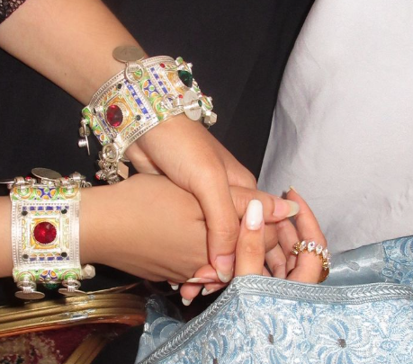
Tanbaylt
Magnifiques bracelets traditionnels travaillés portés élégamment à la main.
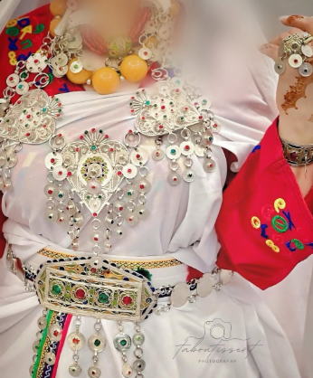
Tahlabt
Élégant collier traditionnel qui se porte avec grâce autour du cou.
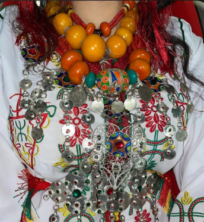
Tahnaqet
Collier précieux constitué de luban authentique, se portant sur le cou.
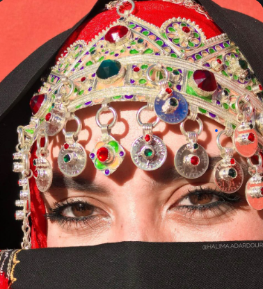
Isrsel
Très joli bijou frontal qui se porte sur le front pour illuminer le visage.
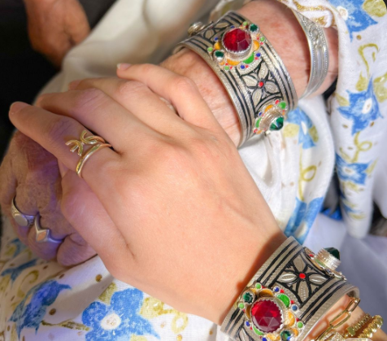
Abzq n bbimi
Bracelets uniques aux couleurs vives (vert, rouge) symbolisant l'héritage ancien du Maroc et de l'Amazigh.
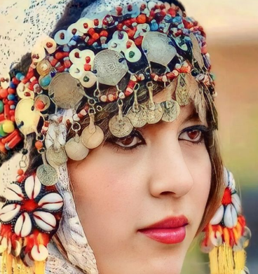
Tazra
Ornement frontal traditionnel, moins fréquent que l'Isersle dans les régions de Tifnit et Tafraout.
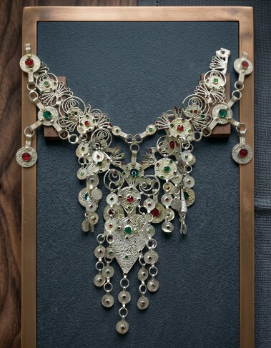
Taguest
Bijou se portant au-dessus du ventre, idéalement accompagné d'un Jamlloul ou d'un Amelhaf.
Vêtements Amazigh de Souss
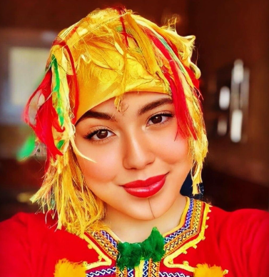
Lqdib
Élément en laine délicate qui se porte sur les cheveux pour une touche traditionnelle unique.
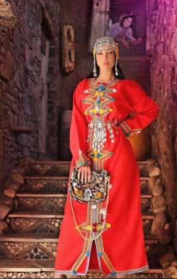
Taqchabt
Célèbre tenue Amazigh rouge, riche en détails et couleurs représentatives de notre culture.
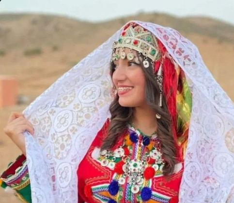
Ariwal
Écharpe ou foulard traditionnel souvent blanc, se portant avec distinction sur la tête.
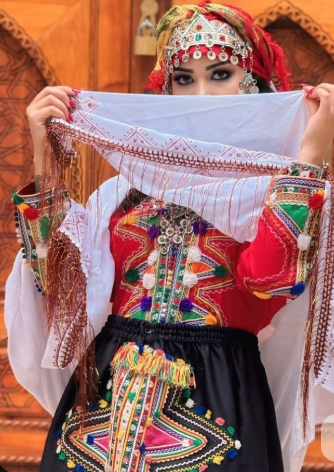
Asmotl
Jupe noire indispensable symbolisant le civisme et l'appartenance à l'identité Amazigh.
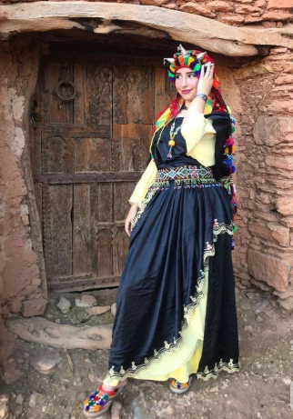
Amlhaf
Tenue emblématique de Tafraout nécessitant l'aide d'une personne expérimentée pour être portée dans les règles de l'art.
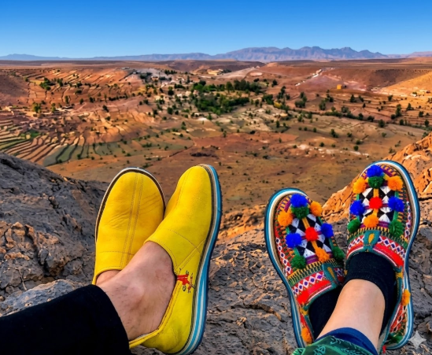
Idokan
Belles babouches en cuir travaillées, chaussures Amazigh célèbres et indispensables.
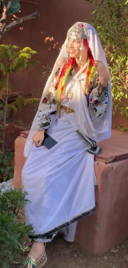
Jamlloul
Tenue blanche traditionnelle réservée aux mariées ou aux nouvelles mariées dans notre culture de Souss.
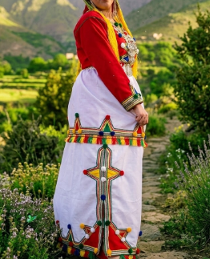
Taterft
Jupe spéciale à deux étages (en escalier), offrant un design proche de l'Esmotl mais avec une structure unique.
Où découvrir cet artisanat ?
Souk de Tiznit
Le cœur battant de l'argent. Idéal pour les bijoux authentiques.
Coopérative d'Artisanat
Découvrez le travail en direct des tisserands et orfèvres du Souss.
Boutiques d'Agadir
Pour une sélection raffinée de tenues modernes inspirées du traditionnel.